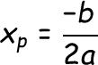
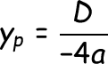

Fungsi kuadrat, dikenal sebagai fungsi parabola adalah salah satu jenis fungsi matematika yang memiliki kurva U-shaped atau terbalik. fungsi kuadrat merupakan fungsi yang dengan variabel bebasnya berpangkat dua.
Dengan :
- f(x) : nilai output y
- x : variabel indepnden
- a, b, dan c adalah koefisien konstanta, dengan a tidak sama dengan nol
Jika a > 0 maka bentuk parabola terbuka ke atas, dan jika a < 0 maka parabola terbuka ke bawah
Digunakan untuk menentukan jumlah dan tipe akar dari dari fungsi kuadrat, jika D > 0 ada dua akar berbeda, jika D = 0 ada satu akar ganda dan jika D < 0 tidak ada akar rill
Langkah-langkah menggambar grafik fungsi kuadrat:
- Menentukan titip potong terhadap sumbu X dan sumbu Y
1. Grafik memotong sumbu X jika y = 0
2. Grafik memotong sumbu y jika x = 0
- Menentukan titik balik
 - Menghubungkan titik-titik yang diperoleh sehingga terbentuk kurva